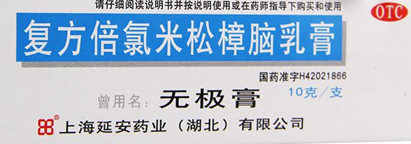
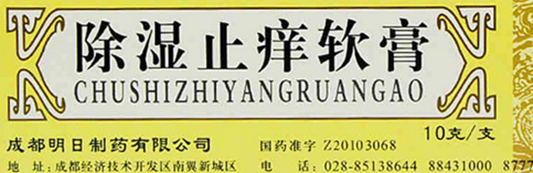
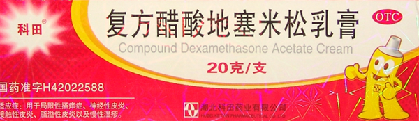
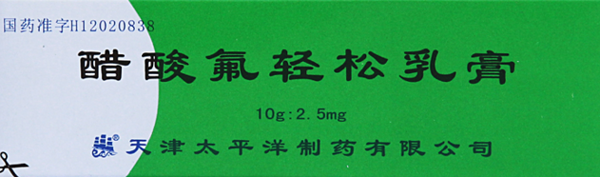
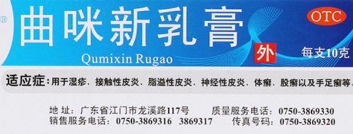
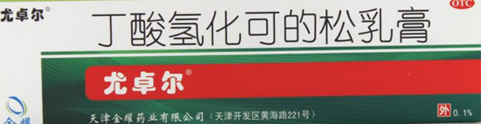
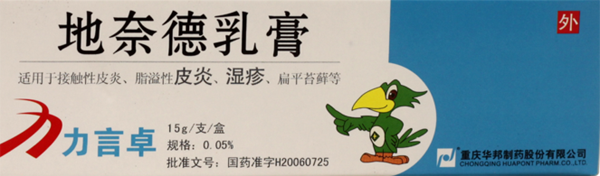
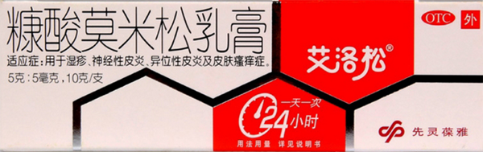

原文连接:https://www.daquan.com/post/11288.html
湿疹是极其常见的一种皮肤炎症反应，而且小孩的患病率还相当高，瘙痒剧烈，而且还容易复发。造成湿疹的原因很多，今天就介绍一下湿疹用什么药膏最有效，根治湿疹的几个小偏方都有什么。
湿疹用什么药膏最有效
1、无极膏

成分：主要成分是薄荷脑、冰片、丙酸倍氟米松、合成樟脑和麝香草酚、水杨酸甲酯等。
功效：有抗菌、止痒、消炎、镇痛的作用。
适宜人群：对于皮肤瘙痒、虫咬、湿疹、神经性皮炎、接触性皮炎和荨麻疹等等一系列问题，都有很好的治疗效果。但如果皮肤已经开始出现有溃烂或者其他损伤，就不适合使用了，另外像一些病毒性的皮肤问题，类似像水痘、疱疹这些，也是不适合用的。
2、除湿止痒软膏
成分：主要成分有白鲜皮、地肤子、蛇床子、冰片、紫花地丁、茵陈、黄柏、虎杖等等。
功效：清热、祛风、利湿、止痒。
适宜人群：对于治疗体质湿热引起的急慢性湿疹，效果非常好。涂药的时候可能会有少数人出现皮肤刺痛的情况，这是正常现象，但不要把药涂在伤口已经出现破损、溃烂的地方。另外用药期间要注意饮食，不要吃辛辣、刺激、油腻、有发性的东西，烟酒也是不能沾的。
3、复方醋酸地塞米松乳膏

成分：主要成分是薄荷脑、樟脑、醋酸地塞米松。
功效：主要就是专门针对皮肤问题的止痒和治疗功效。
适宜人群：对于慢性湿疹、局部皮肤瘙痒、以及接触性皮炎、神经性皮炎和脂溢性皮炎都有很好的治疗效果。但如果是病毒性的水痘或者是疱疹这些症状，就不适合用这个药了。正常情况下，只需要把药膏取少量，轻轻抹匀在患处，但注意不要抹到已经有破损和溃烂的位置，一天两次就够了。
4、醋酸氟轻松乳膏

成分：醋酸氟轻松。
适宜人群：醋酸氟轻松乳膏实际上属于一种肾上腺皮质激素类药，对湿疹、皮炎这些皮肤问题都有一定的疗效。比方说，皮肤瘙痒、银屑病神经性皮炎、过敏性皮炎、接触性皮炎、脂溢性皮炎等等，都可以使用醋酸氟轻松乳膏。但因为是激素药，所以不建议长期地、大面积地使用。
5、曲咪新软膏

成分：主要成分是硝酸曲安奈德、硝酸咪康唑、硫酸新霉素等。
适宜人群：适用于湿疹、皮炎等，像神经性皮炎、接触性皮炎、脂溢性皮炎等等都有很好的效果，而且还可以用于治疗一些癣，比如手足癣、体癣、股癣。一般情况下，一天涂两到三次就足够了。但它同样也是属于激素类药物，所以不建议长期大面积使用，疗程尽量控制在三至四周以内。
6、曲安奈德益康唑乳膏

成分：主要成分是曲安奈德、硝酸益康唑。
适宜人群：适用于湿疹、皮炎以及一些癣症的治疗，包括有体癣、花斑癣、足癣、股癣等等，但若是病毒感染性的就不宜用。每天早晚涂一次就足够了，像是治疗湿疹和皮炎的话，大概两周到四周大概就能痊愈。而如果是治疗真菌性的皮肤病，就要时间稍微久一点，要一直到炎症反应完全消退，但最多不能超过四周。
7、丁酸氢化可的松乳膏

成分：主要成分就是丁酸氢化可的松。
适宜人群：适用于过敏性湿疹、过敏性皮炎、脂溢性皮炎和癣样的皮肤瘙痒症。一般是一天涂两次就足够，但如果是感染性的皮肤病的话，就不能使用丁酸氢化可的松乳膏。伤口有溃烂就不宜涂药，而且乳膏涂药之后出现红肿、灼烧感，就要立刻洗掉并停药。一般是一周以内会见到效果，如果没有得到缓解要及时咨询医生。
8、地奈德乳膏

成分：主要成分是地奈德。
适宜人群：地奈德乳膏对很多种的皮肤病都有疗效，比如说湿疹、接触性皮炎、脂溢性皮炎、神经性皮炎、银屑病、扁平苔癣、单纯性苔癣等等引起的皮肤瘙痒和炎症，地奈德乳膏都有很好的效果。最好是在医生指导下使用，避免接触到眼睛，而且如果是封包治疗，要有专业人士操作，尤其在出现任何不良反应的时候，最好是及时有医生能够处理。
9、艾洛松（糠酸莫米松乳膏）

成分：主要成分是糠酸莫米松。
适宜人群：对于湿疹、神经性皮炎和皮肤瘙痒症状都有很好的治疗作用，一般情况下是一天只需要在患处抹一次药就足够了，但不能接触破损的地方。如果是真菌感染，就不适用了。价格也十分便宜，大概在5元左右，但如果是涂药之后，用药部位出现红肿并且有烧灼感，要立刻洗掉并停药。
结语：关于湿疹用什么药膏最有效，就介绍上面这九种，大家都可以参考选用，而根治湿疹的几个偏方由于篇幅原因，我们放到下一篇文章给大家介绍。